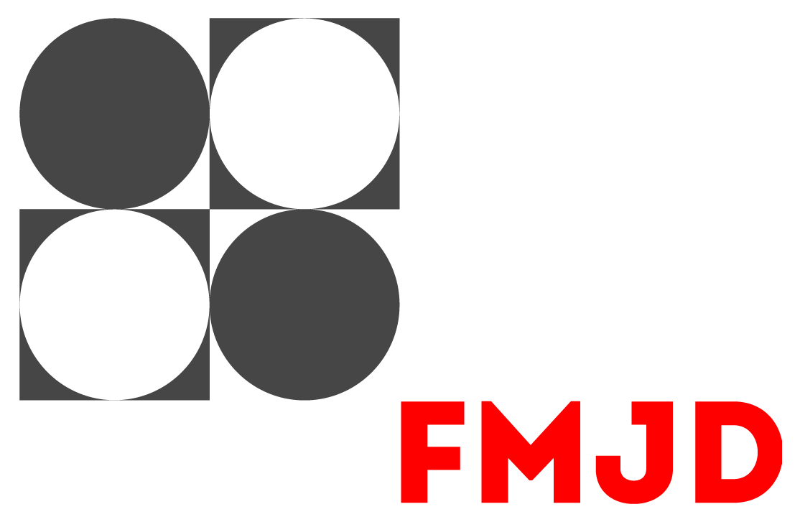

World Draughts Federation
One of the more notable checker federation is the World Draughts Federation (FMJD). they were founded in 1947 by France, the Netherlands, Belgium and Switzerland.
The federation has members from all around the globe with a total of 66 members. the current president of the federation is Janek Mäggi from Estonia.